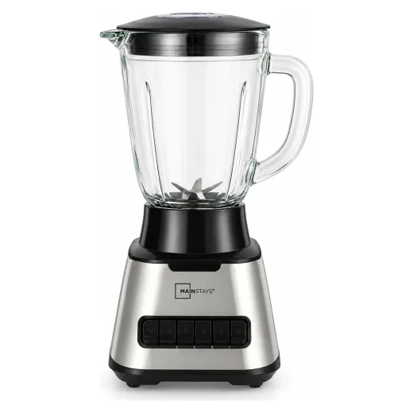
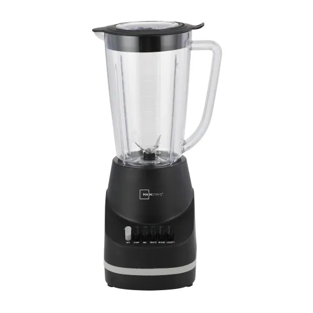
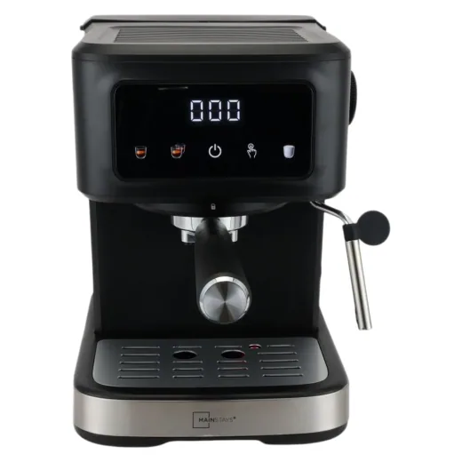

Inicio › Licuadoras y cafeteras

Mainstays
Cafetera Mainstays programable de 120V con capacidad de 12 tazas
L 795
En Walmart
Precio en cada tienda
| Tienda | Precio | Antes | Disponibilidad | |
|---|---|---|---|---|
| Walmart | L 795 | — | Disponible | Ver en tienda › |
Precios referenciales tomados de cada tienda el 28 de noviembre de 2026. El precio válido es el que muestra la tienda al comprar.
Historial de precio
Lo seguimos desde el 1 de noviembre. Precio más bajo registrado: L 795 en Walmart (1 de noviembre), igual que hoy. El precio no ha cambiado en ese tiempo.
Características
| Color | Negro |
|---|---|
| Marca | Mainstays |
| Medida de altura | 32 cm aproximadamente |
| Medida de peso | 2.8 kg aproximadamente |
| Modelo o serie del producto | CM9431 |
| País de Origen - Ensamblaje | China |
| Capacidad | 12 tazas o 1.8 L aproximadamente |
| Material | Jarra de vidrio con estructura plástica |
| Uso recomendado | Ideal para preparar café filtrado de forma automática y programada |
| Voltaje | 120 V |
| Ahorro de energía | Función de apagado automático |
| Opciones de cocción | Preparación programada y opción de café intenso |
| Tipo de tecnología de artículo | Sistema de goteo programable con pantalla digital |
Descripción
La cafetera programable Mainstays de 12 tazas y 120 V, es una opción práctica para preparar café en casa, oficina o espacios de reunión. Su capacidad permite servir varias porciones para desayunos, meriendas, visitas o rutinas de trabajo, mientras la función programable facilita organizar la preparación según el horario deseado. Puede utilizarse con café molido y accesorios compatibles, siguiendo las indicaciones del fabricante. Es una alternativa conveniente para quienes buscan una cafetera funcional para uso diario. Se recomienda colocar sobre superficie estable, no exceder el nivel de agua, limpiar después de usar y desconectar cuando no esté en funcionamiento.
Información del producto: La información de este producto es proporcionada por fabricantes y distribuidores y te recomendamos verificar las especificaciones con el fabricante para obtener detalles más actualizados.
Otros licuadoras y cafeteras Mainstays
 Mainstays Tostadora De 2 RebanadasL 700En Walmart
Mainstays Tostadora De 2 RebanadasL 700En Walmart
Licuadora Mainstays con jarra de vidrioL 895En Walmart
Licuadora Mainstays Jarra Plástica 6 VelocidadesL 695En Walmart Licuadora Mainstays personal 700 W con 3 velocidadesL 995En Walmart
Licuadora Mainstays personal 700 W con 3 velocidadesL 995En Walmart Percoladora Mainstays capacidad 60 TazasL 1,395En Walmart
Percoladora Mainstays capacidad 60 TazasL 1,395En Walmart
Mainstays Cafetera Espresso De 1 5 LtsL 2,200En Walmart